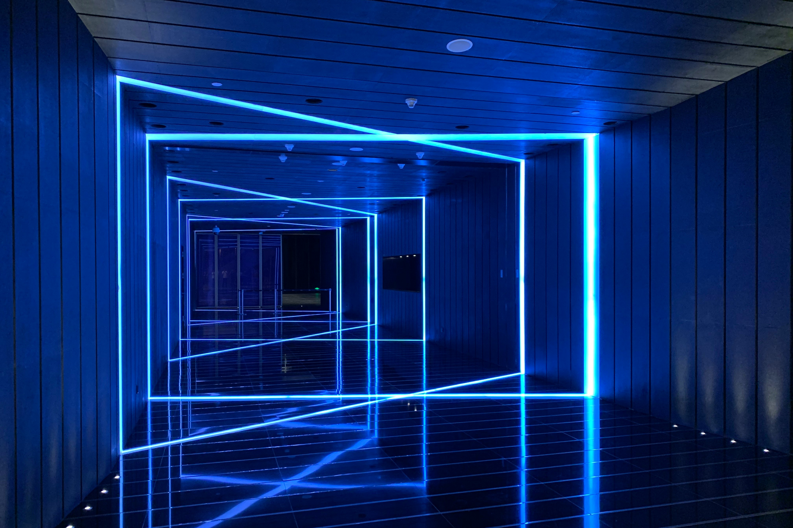

Torneo de Laser Tag
Sala Box, Chiclana de la frontera, Cádiz
Deportes, Actividades al aire libre

Feria del Caballo Jerez 2024
Recinto Ferial, Jerez de la Frontera, Cádiz
Actividades al aire libre

Salón del Manga Chiclana 2024
Sala Box, Chiclana de la frontera, Cádiz
Ocio, Cultura

Torneo de Ajedrez Verano 2024
Casa de la Juventud, Cádiz, Cádiz
Ocio, Deportes